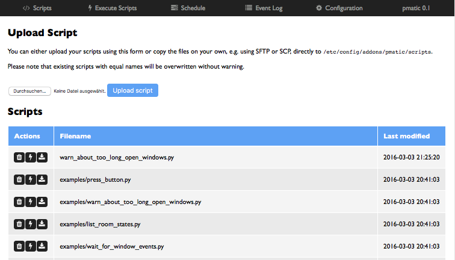
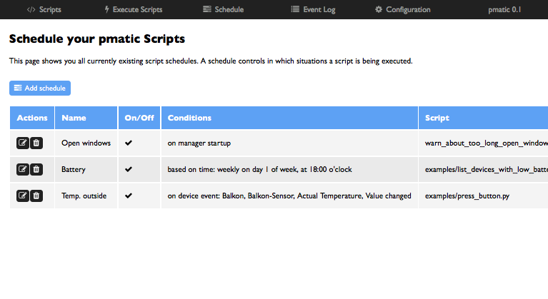

The pmatic Manager¶
One component of pmatic is the pmatic Manager. It has been created to make the management of your pmatic on the CCU easier. It provides a dedicated web GUI to upload and manage your scripts. It is possible to execute them manually for testing purposes and you can also create schedules to let the manager execute your scripts on startup of the manager, based on time or based on device events received from the CCU.
Features of the Manager¶
- Upload and delete pmatic scripts
- Execute scripts from the web browser
- Schedule automatic script execution
- On startup of the manager
- After initializing connection with the CCU
- Based on time (daily, weekly, ...)
- Based on events received from the CCU (like a specific parameter was updated or changed)
- Also configurable via web GUI
- Password protected access
- Small diagnose tools
- Last X CCU events can be viewed
- Shows a detailed status information about the connection with the CCU
How to access the Manager?¶
After installing pmatic on your CCU, you can open your browser and open the URL
http://[CCU_ADDRESS]:9120/. Please remember to replace the [CCU_ADDRESS] by the real
address of your CCU. For me this is the host name ccu, but it might be another host name
for you. You can even use the IP address of your CCU.
Once inserted, you should see the pmatic Manager GUI. Your first step should be to set a login password for the Manager on the Configuration page. Future accesses will be protected by this password.
Script Management¶
The pmatic Manager gives you the option to upload your pmatic scripts from your computer to the CCU using the web browser. It is also possible to start the scripts right from the script list.
You are totally free to use this feature. If you are more comfortable with the command
line, you can also copy your scripts manually, e.g. via SSH, to the script path
/etc/config/addons/pmatic/scripts on your CCU.
If you like you can also edit your scripts in place in this directory. All changes are reflected immediately on the next execution of the script. You don’t need to restart anything. If you like to rename your scripts, you can also do this on the command line. Also no need to restart anything.
Execute Scripts Manually¶
You can start any script of your choice using the Manager. Simply choose your script from the script list and click on the “bolt” icon on the left side of the filename.
You will be redirected to the Execute Scripts page which will immediately display you the output produced by the script during execution and the final exit code on completion.

You can also choose a script to be executed directly on the Execute Scripts page.
Automatically Execute Scripts¶
The Manager can be used to trigger your scripts in specific situations.
It is, for example, possible to let the manager execute an endless running script which is doing some interesting stuff during it’s run time, right after startup of the manager. Or, if the script depends on the CCU state, after initialization of the CCU connection.
If you want a script to be executed on a regular base, for example daily at a given time, you can use the execution based on time. It currently supports the modes daily, weekly on a weekday of your choice or monthly on a given day of the month. For each of the day choices you can choose the time of the day to execute the script. This is not feature complete, it might be extended in the future to make it more flexible.
Another important option is to listen for events of specific devices and make the manager execute scripts when either a value is updated or changed. For this you need to choose the device, channel, parameter and the event type.
View Device Events¶
The device event log shows the last 1000 events received from the CCU by default. This limit can be configured on the Configuration page, if you like it to show more events. These are events which you can register your pmatic scripts on to be called once such an event is received.


{kind=link}
{kind=link}
View the State of the Manager¶
The overall health of the manager can be viewed on the state page. It shows you whether or not the connection with the CCU components is alive, the number of found devices and channels together with other useful debugging information.

If there is a connection problem or a configuration issue and the manager can not connect to the CCU, this page will show you the error message.
When the information on this page is not enough, you should take a look at the log file
Configuration Configuration of the manager which is located at /var/log/pmatic-manager.log
on your CCU.
Starting, Stopping and Restarting the Manager¶
When installed via the CCU package on the CCU, the Manager comes together with an Init-Script which starts the Manager on startup and stopps it when shutting down or restarting the CCU.
If you like to control the process manually, you can use this script to start, stop or restart the Manager process.
The script is located at /etc/init.d/S55pmatic. So if you like you can use
/etc/init.d/S55pmatic restart to restart the pmatic Manager process.